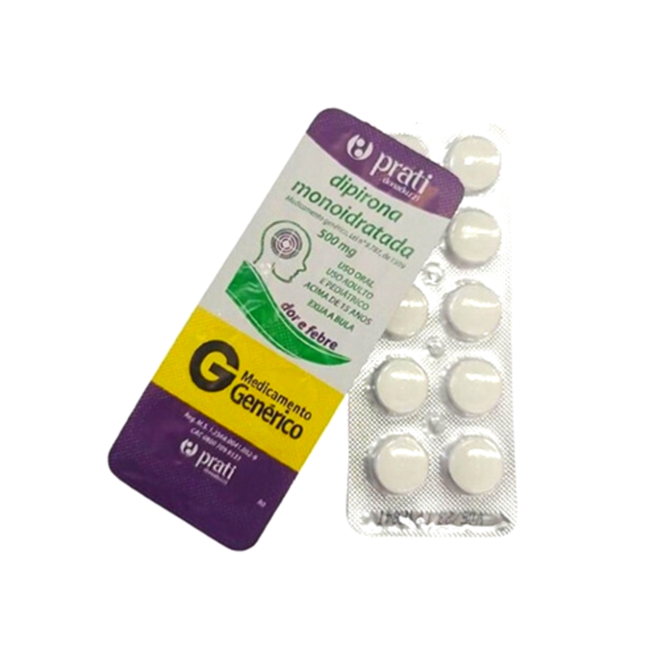

<app-carossel [imagens]="[
'https://plus.unsplash.com/premium_photo-1661766456250-bbde7dd079de?ixlib=rb-4.0.3&ixid=M3wxMjA3fDB8MHxwaG90by1wYWdlfHx8fGVufDB8fHx8fA%3D%3D&auto=format&fit=crop&w=872&q=80',
'https://images.unsplash.com/photo-1580281657527-47f249e8f4df?ixlib=rb-4.0.3&ixid=M3wxMjA3fDB8MHxwaG90by1wYWdlfHx8fGVufDB8fHx8fA%3D%3D&auto=format&fit=crop&w=870&q=80',
'https://images.unsplash.com/photo-1547489432-cf93fa6c71ee?ixlib=rb-4.0.3&ixid=M3wxMjA3fDB8MHxwaG90by1wYWdlfHx8fGVufDB8fHx8fA%3D%3D&auto=format&fit=crop&w=1470&q=80',
]"></app-carossel>
<mat-grid-list cols="3" rowHeight="3:5">
  <mat-grid-tile>
    <mat-card>
      
      <mat-card-content>Simple card</mat-card-content>
      <h3>DIPIRONA MONOIDRATADA</h3>
      <p>Este medicamento é indicado como analgésico (para dor) e antitérmico (para febre).</p>
                            <ul>
                                <li>Medley</li>
                                <li>10 Comprimidos</li>
                                <li>DIPIRONA SODICA</li>
                                <li>500MG</li>
                            </ul>
    </mat-card>
  </mat-grid-tile>

  <mat-grid-tile>2</mat-grid-tile>
  <mat-grid-tile>3</mat-grid-tile>
  <mat-grid-tile>4</mat-grid-tile>
  <mat-grid-tile>5</mat-grid-tile>
  <mat-grid-tile>6</mat-grid-tile>
</mat-grid-list>


